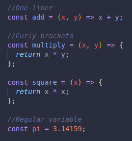
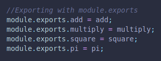
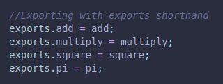
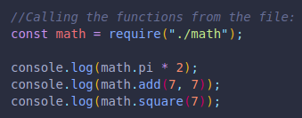
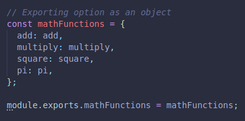
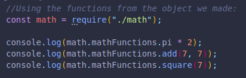
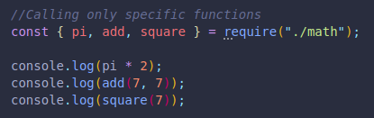
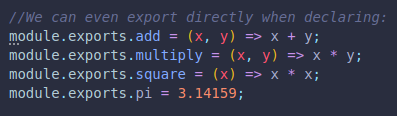

When working with node js, we can call another js document and reference it on our new js document.
The only thing that will be imported is what we explicitly exported in the original js file we are referencing.
This is done with module.exports
The default is an object, but if we were to set the export to a string or a number, that would be all we would have access to from our new js file.
***We must return what we expect if using curly brackets for our functions, unless it is a one-liner.
Examples:(EXPORTING from desired file)
Shorthand
(WE HAVE TO MAKE SURE EXPORTS'S VALUE DOESN'T CHANGE, AS IT WOULD AFFECT THE EXPORT)
Examples:(IMPORTING to desired file)
If the path is not local, we must specify exactly where our referenced file is located.
We can also import from an object we create:
 Or even call only specific functions:
We can call them without the math constant name, since it has been removed.
And we can even export at the time we declare a function or variable:
